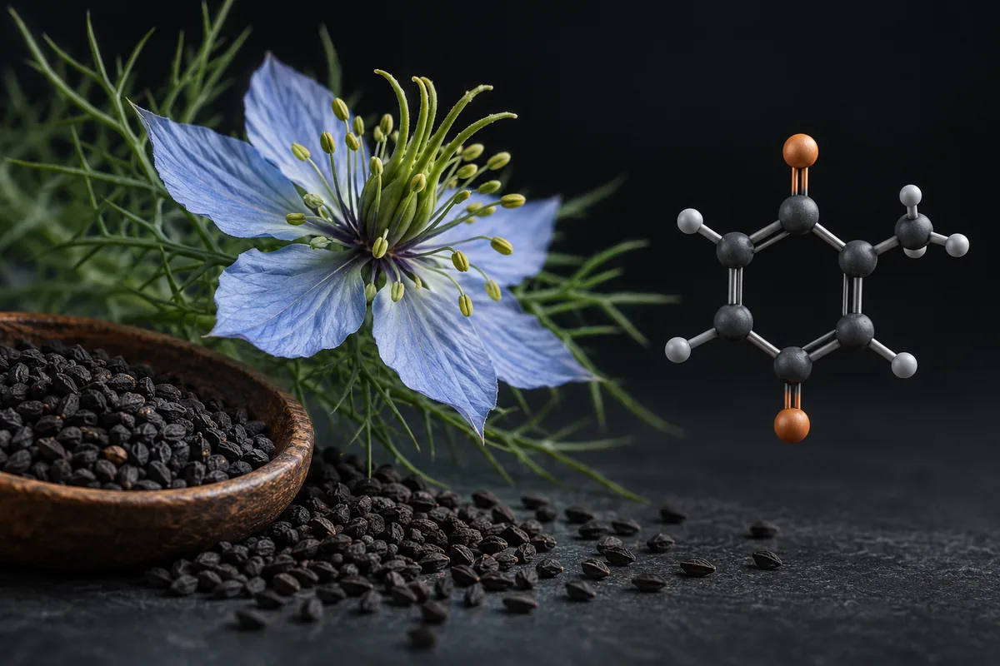

Cominho-preto (Nigella sativa; timoquinona)
O estudo iraquiano existe, mas durou 3 meses, não 6, e a testosterona subiu 29%; os 59% eram da motilidade dos espermatozoides.

Matériel expérimental. Lisez avant d’utiliser quoi que ce soit d’ici.
Rien sur cette page n’est une recommandation médicale, une prescription ou un plan de traitement. C’est une traduction organisée de protocoles qui circulent dans des communautés de recherche et, quand cela existe, de ce que des essais publiés ont testé. Les deux choses sont marquées différemment — et ne sont pas équivalentes.
La plupart des composés ici n’ont pas d’approbation de la FDA pour un usage humain. Plusieurs sont vendus avec l’étiquette « usage exclusivement en recherche », ce qui signifie qu’ils n’ont passé aucun contrôle de pureté, de stérilité ou de dosage pour une consommation par des personnes. Une dose décrite par la communauté n’est pas une dose validée : c’est ce que quelqu’un a rapporté avoir fait.
Parlez avec un professionnel de santé habilité avant d’envisager l’un de ces composés. Si vous en utilisez déjà un et ressentez quelque chose d’imprévu, consultez — n’attendez pas le prochain examen de routine.
Résumé
O cominho-preto (Nigella sativa) é uma semente usada como tempero; a timoquinona é o composto mais estudado dela. O estudo citado nos vídeos existe: 40 homens inférteis em Tikrit, no Iraque, 2 g por dia por 3 meses, com contagem de espermatozoides +39% e motilidade +60% no próprio grupo, e testosterona +29%. Ele não está no PubMed, não descreve sorteio e mal descreve o grupo placebo. Um ensaio iraniano randomizado, com óleo, também melhorou o sêmen. Não existe meta-análise de testosterona ou sêmen com a planta, e nenhum estudo testou microplástico no testículo.
Pourquoi cette page existe
O cominho-preto aparece descrito em vídeos curtos sobre saúde masculina que vi publicados na internet, como um "pó preto" que "limpa os testículos de microplásticos": as embalagens de plástico inflamariam as células que produzem testosterona, e a timoquinona neutralizaria esse estresse "direto no escroto", com "metanálises clínicas" comprovando a volta da testosterona. Outro vídeo dá número e fonte: 2 g por dia em cápsula, por 6 meses, num estudo da Universidade de Tikrit, no Iraque, com homens inférteis e placebo; a testosterona teria subido 59%, a contagem de espermatozoides quase 40% e a motilidade quase 60%, com LH e FSH subindo junto. A "pegadinha" seria a dose e a forma de tomar.
Levantei as alegações de 2 vídeos curtos, separei as 11 verificáveis e fui atrás da fonte de cada uma. O estudo de Tikrit não está no PubMed: achei o artigo na revista da universidade, conferi o registro de DOI e li o texto inteiro. Os demais, li pelos resumos. Nenhum número desta página veio da fonte secundária do site.
Os vídeos não dizem o nome científico. A semente que o estudo citado usou é a Nigella sativa, da família Ranunculaceae, chamada em inglês de black seed ou black cumin. A timoquinona é um dos seus compostos, também estudado isolado.
O estudo de Tikrit, lido inteiro
Marbat, Abid Ali e Hadi publicaram o trabalho em 2013 no Tikrit Journal of Pharmaceutical Sciences. Os números que circulam saem dele, mas trocados de lugar.
- Quem e quanto tempo. Entraram 55 homens de 18 a 40 anos com contagem ou qualidade baixa de espermatozoides, atendidos em clínicas de urologia de dezembro de 2011 a dezembro de 2012. Quinze desistiram. Os 40 que completaram tomaram 2 g por dia de N. sativa em cápsula (duas cápsulas duas vezes ao dia) por 3 meses, não 6.
- O desenho é fraco e mal descrito. O resumo chama o estudo de "caso-controle longitudinal". Nos resultados aparece um segundo grupo, tratado com 2 g por dia de farelo de trigo como placebo, mas o artigo não diz quantos homens havia nele, como foram divididos, nem se alguém estava cego. A comparação publicada é de cada grupo antes e depois, com teste t não pareado.
- Os números do grupo da semente. Contagem de 31,72 para 52,23 milhões/mL (+39,27%); motilidade ativa +59,71%; viabilidade +46,83%; morfologia normal +22,65%; volume +12,93%. No grupo do farelo, nada mudou de forma significativa.
- Os hormônios. FSH de 3,77 para 7,14 mUI/mL (+47,46%); LH de 4,06 para 6,03 mUI/mL (+32,75%); testosterona de 10,13 para 13,94 ng/mL (+29,35%).
- De onde veio o "59%" da testosterona. O 59,71% do artigo é a motilidade. A testosterona subiu 29,35%. O "quase 60% de motilidade" e o "quase 40% de contagem" dos vídeos estão certos; o "59% de testosterona" não.
É um estudo pequeno, sem sorteio descrito, com o grupo controle quase invisível no texto, publicado numa revista local e não indexado no PubMed. Ele mostra um sinal antes e depois num grupo de 40 homens. Não é a prova que os vídeos sugerem.
Combien de preuves existent, vraiment
Os números abaixo foram levantados por mim em 16 de outubro de 2026, no PubMed e no ClinicalTrials.gov. A consulta de cada linha está ao lado do número, para qualquer pessoa repetir e me contradizer.
| Base | Requête | Résultat |
|---|---|---|
| PubMed | ("nigella sativa" OR thymoquinone OR "black seed" OR "black cumin") | 4.166 artigos |
| PubMed | ("nigella sativa" OR thymoquinone OR "black seed" OR "black cumin") AND (Randomized Controlled Trial[Publication Type] OR Meta-Analysis[Publication Type]) | 140 artigos |
| PubMed | ("nigella sativa" OR thymoquinone OR "black seed" OR "black cumin") AND (sperm* OR semen OR infertil*) AND (humans[MeSH Terms]) | 16 articles |
| PubMed | ("nigella sativa" OR thymoquinone OR "black seed" OR "black cumin") AND (testosterone) AND (humans[MeSH Terms]) | 10 artigos |
| PubMed | ("nigella sativa" OR thymoquinone OR "black seed" OR "black cumin") AND (sperm* OR semen OR infertil* OR testosterone) AND (Randomized Controlled Trial[Publication Type] OR Meta-Analysis[Publication Type]) | 4 articles |
| PubMed | ("nigella sativa" OR thymoquinone OR "black seed" OR "black cumin") AND (microplastic* OR nanoplastic* OR polystyrene) | 4 articles |
| PubMed | ("nigella sativa" OR thymoquinone OR "black seed" OR "black cumin") AND (bisphenol) | 9 artigos |
| PubMed | ("nigella sativa" OR thymoquinone OR "black seed" OR "black cumin") AND (Leydig) | 6 artigos |
| ClinicalTrials.gov | intervenção: "nigella sativa" OR thymoquinone OR "black seed" | 76 estudos registrados |
| ClinicalTrials.gov | intervenção: ("nigella sativa" OR thymoquinone OR "black seed") AND AREA[Phase]PHASE3 | 9 ensaios de fase 3 |
| ClinicalTrials.gov | intervenção, por condição: ("nigella sativa" OR thymoquinone OR "black seed") AND AREA[Condition](infertility OR oligospermia OR asthenozoospermia) | 0 estudos registrados |
Lecture honnête de ces chiffres
- Não há meta-análise de testosterona ou sêmen. Dos 4 artigos marcados como ensaio randomizado ou meta-análise que tocam em sêmen, infertilidade ou testosterona, dois são em mulheres com síndrome dos ovários policísticos e dois são ensaios em homens: o iraniano de sêmen e um indonésio de testosterona livre. Nenhum é meta-análise. "Metanálises clínicas comprovam" não tem base no PubMed.
- Microplástico: zero. Os 4 artigos da busca falam de nanopartícula de poliestireno usada como veículo de remédio, bactéria e curativo. Nenhum testa a semente contra microplástico no corpo.
- Bisfenol: só animal e célula. Os 9 artigos de bisfenol são em ratos, camundongos ou células; o de testículo é em camundongos.
- Registro não é resultado, e aqui nem registro há. Dos 76 registros de estudo, nenhum é de infertilidade masculina.
- Contagem de artigo mede atenção acadêmica, não evidência de desfecho. A planta é muito estudada (4.166 artigos, 140 ensaios ou meta-análises), mas sobretudo em diabetes, gordura no sangue, asma, rinite e infecções.
Les études qui soutiennent les allégations
Segundo o PubMed e a revista de Tikrit, estes são os trabalhos concretos por trás do que se diz sobre o cominho-preto e a fertilidade masculina.
| Étude | N | Contexte | Ce qui a été rapporté | Réserve |
|---|---|---|---|---|
| Marbat, Abid Ali e Hadi, 2013 Tikrit J Pharm Sci 9(1):19-29 · doi:10.25130/tjphs.2013.9.1.2.19.29 | 40 tratados (55 inscritos); placebo sem número informado | Homens inférteis de 18 a 40 anos; 2 g/dia de N. sativa em cápsula, 3 meses | Antes e depois no grupo da semente: contagem +39,27%, motilidade +59,71%, FSH +47,46%, LH +32,75%, testosterona +29,35% | Fora do PubMed; "caso-controle" no resumo; sem sorteio nem cegamento descritos; teste t não pareado |
| Kolahdooz et al., 2014 Phytomedicine 21(6):901-5 · PMID 24680621 | 68 (34 + 34) | Irã; homens inférteis com sêmen alterado; óleo 2,5 mL 2×/dia contra parafina líquida, 2 meses; randomizado, duplo-cego | Contagem, motilidade, morfologia, volume, pH e células redondas melhores que no placebo; sem efeito adverso | Números absolutos não estão no resumo; não mediu testosterona segundo o resumo |
| Datau et al., 2010 Acta Med Indones 42(3):130-4 · PMID 20724766 | não informado no resumo | Indonésia; homens de 30 a 45 anos com obesidade central; 3 meses; duplo-cego | Testosterona livre caiu menos que no controle, sem significância; peso e cintura caíram | Não é infertilidade; resultado hormonal não significativo |
| Ahmadian et al., 2022 (revisão sistemática) Curr Drug Discov Technol 19(6):e200822207800 · PMID 35993457 | 14 ensaios, 1.218 pessoas | Ervas em infertilidade masculina idiopática | N. sativa entre os produtos com resultado favorável; nenhum efeito adverso grave | Revisão de 15 produtos diferentes; não é meta-análise da semente |
| Santos et al., 2019 (revisão) J Ethnopharmacol 235:392-405 · PMID 30790614 | — | Fitoterápicos, testosterona e sêmen | "Evidência moderada" para N. sativa aumentar testosterona total e melhorar o sêmen | Revisão narrativa focada |
| Al-Griw et al., 2023 Comb Chem High Throughput Screen 26(2):301-312 · PMID 35570547 | 40 camundongos | BPA por 6 semanas, com ou sem óleo de N. sativa | O óleo atenuou o dano ao testículo e ao sêmen causado pelo BPA e reduziu marcador de estresse oxidativo | Animal; é bisfenol, não microplástico |
Doses utilisées dans des études humaines publiées
Ceci n'est pas une recommandation de dose : c'est le relevé de ce qui a été administré dans des études publiées, avec la finalité de chacune. Hors du contexte de l'étude, ces chiffres ne se transfèrent pas.
| Étude | Dose | Durée | Finalité de l'étude |
|---|---|---|---|
| Marbat, Abid Ali e Hadi, 2013 | 2 g/dia de semente em pó, em cápsula (2 cápsulas 2×/dia) | 3 meses | Sêmen e hormônios em homens inférteis |
| Kolahdooz et al., 2014 | 2,5 mL de óleo 2×/dia (5 mL/dia) | 2 meses | Sêmen em homens inférteis |
| Datau et al., 2010 | Não informada no resumo | 3 meses | Testosterona livre e metabolismo na obesidade central |
Os dois estudos de sêmen usaram formas diferentes (semente em pó e óleo) e acharam melhora nas duas. Nenhum estudo comparou formas, então não há base para a "forma certa" de tomar.
Das 11 alegações conferidas, 2 se confirmam como foram ditas, as duas do estudo de Tikrit
Cada linha é uma alegação como ela circula, sem o nome de quem a fez. O veredito usa seis rótulos: confirmado, parcialmente, não sustentado, sem estudo em humanos, estudo em animal ou in vitro e número não encontrado na fonte citada.
| O que se diz | O que os estudos mostram | Verdict |
|---|---|---|
| O "pó preto" limpa os testículos de microplásticos e impede que entrem mais | Nenhum estudo testou a semente contra microplástico; os 4 artigos da busca são sobre outra coisa | Não sustentado |
| As embalagens de plástico inflamam as células de Leydig e bloqueiam os hormônios | Há microplástico em testículo humano (Hu 2024, 23 testículos), mas não localizei estudo que mostre inflamação das células de Leydig em homens (ver a página bpa-ftalatos-plasticos) | Sem estudo em humanos |
| A timoquinona neutraliza o estresse oxidativo no testículo | O óleo reduziu marcador de estresse oxidativo no testículo de camundongos expostos a BPA (Al-Griw 2023) | Estudo em animal ou in vitro |
| "Metanálises clínicas comprovam" que ela restaura a testosterona total | Não há meta-análise de N. sativa e testosterona no PubMed; o único ensaio em homens com testosterona livre não teve resultado significativo (Datau 2010) | Não sustentado |
| Sem esse "protetor vegetal", o testículo entra em "falha metabólica crônica prematura" | Nenhuma fonte citada e nenhuma localizada | Não sustentado |
| Há um estudo da Universidade de Tikrit, no Iraque, com homens inférteis e placebo | O estudo existe (Marbat 2013); 40 homens tratados; um grupo de farelo de trigo aparece nos resultados, sem número nem método de divisão descritos | Parcialmente |
| 2 g por dia em cápsula, por 6 meses | A dose é 2 g/dia em cápsula; a duração foi 3 meses | Parcialmente |
| A testosterona subiu 59% | A testosterona subiu 29,35%; o 59,71% do artigo é a motilidade | Número não encontrado na fonte citada |
| A contagem de espermatozoides subiu quase 40% e a motilidade quase 60% | +39,27% e +59,71%, antes e depois, no grupo da semente | Confirmado (num estudo fraco) |
| LH e FSH subiram junto: o corpo "recebeu ordem" para fabricar o próprio hormônio | LH +32,75% e FSH +47,46%; a interpretação é dos vídeos, não do artigo | Confirmado (os números); a interpretação é hipótese |
| A "pegadinha" é a dose e a forma de tomar; do jeito errado "vira só tempero" | Os dois estudos de sêmen usaram pó (2 g/dia) e óleo (5 mL/dia); nenhum comparou formas | Não sustentado |
Placar: 2 confirmadas, 2 parcialmente, 4 não sustentadas, 1 com número não encontrado na fonte citada, 1 sem estudo em humanos e 1 com estudo só em animal ou in vitro.
Segurança, efeitos adversos e quem não deve usar sem médico
- Nos ensaios curtos, poucos problemas. O ensaio iraniano não relatou efeito adverso em 2 meses; a revisão de 2022 não achou efeito adverso grave nos ensaios de ervas para infertilidade.
- Fora dos ensaios, há relatos sérios. Um caso de rabdomiólise, lesão renal aguda e lesão do fígado depois de tomar óleo de cominho-preto foi publicado em 2024 (Sener 2024). Um caso de insuficiência renal aguda em paciente diabético foi associado à planta em 2013 (Arslan 2013). Em 2026, uma reação de pele com bolhas, parecida com a síndrome de Stevens-Johnson, foi atribuída a um suplemento oral (Chu 2026). Relato de caso não prova causa, mas mostra que "natural" não quer dizer inofensivo.
- Sangramento. Num ensaio sobre neuropatia da quimioterapia, um homem que usava dois antiagregantes desenvolveu um hematoma extenso, com plaquetas a 52 × 10³/µL, depois de a dose de óleo subir para 2.000 mg por dia; os autores classificaram a relação como "possível" (Arab 2026).
- Quem não deve usar sem médico: quem usa anticoagulante ou antiagregante, quem tem doença renal e quem está em quimioterapia. A recomendação vem dos relatos acima; não achei contraindicação formal em bula.
- Interações formais: NÃO VERIFIQUEI bases de interação medicamentosa.
- Como tempero, em quantidade de comida, o uso é antigo; esta página trata de cápsula e óleo em dose de suplemento.
Statut réglementaire
- Brasil, suplemento alimentar: Nigella sativa, cominho-preto e timoquinona não constam do Anexo I da IN 28/2018, na versão consolidada com alterações até a IN 470, de 16 de setembro de 2026. Pela RDC 243/2018 (art. 4º), suplemento só pode conter os constituintes dessa lista. Como semente de tempero, é vendida como alimento; NÃO VERIFIQUEI a norma de especiarias.
- Estados Unidos e União Europeia: NÃO VERIFIQUEI.
- WADA: o cominho-preto não aparece na Lista Proibida de 2026, em vigor desde 1º de janeiro de 2026.
| Principe actif | Schéma recherché | Enregistrements actifs | Classe thérapeutique déclarée | Produits |
|---|---|---|---|---|
| Nigella sativa, cominho-preto, timoquinona | nigella|cominho|timoquin | 0 | — | nenhum produto |
Ce que ce relevé n'a pas fait
- Li o estudo de Tikrit inteiro e os resumos dos demais. O texto do estudo iraquiano em árabe não foi lido.
- Não achei o tamanho do grupo placebo do estudo de Tikrit; o artigo não informa.
- Não li os ensaios em mulheres com síndrome dos ovários policísticos nem os estudos da planta em diabetes e colesterol, fora do tema.
- Não li os estudos em animais sobre timoquinona e testículo além do de bisfenol citado na tabela.
- Não conferi a regulação de especiarias no Brasil nem a situação nos Estados Unidos e na União Europeia.
- Não avaliei interações em base de interações medicamentosas.
- Dois relatos de caso (insuficiência renal em 2013 e reação de pele em 2026) entram pelo título, porque o resumo não está disponível no PubMed.
Références
- Marbat MM, Abid Ali M, Hadi AM. The use of Nigella sativa as a single agent in treatment of male infertility. Tikrit J Pharm Sci. 2013;9(1):19-29. doi:10.25130/tjphs.2013.9.1.2.19.29 — o estudo citado nos vídeos: 3 meses, testosterona +29,35%, motilidade +59,71%; não indexado no PubMed.
- Kolahdooz M, Nasri S, Modarres SZ, et al. Effects of Nigella sativa L. seed oil on abnormal semen quality in infertile men: a randomized, double-blind, placebo-controlled clinical trial. Phytomedicine. 2014;21(6):901-5. PMID 24680621 — o único ensaio randomizado em sêmen no PubMed, com óleo.
- Datau EA, Wardhana, Surachmanto EE, et al. Efficacy of Nigella sativa on serum free testosterone and metabolic disturbances in central obese male. Acta Med Indones. 2010;42(3):130-4. PMID 20724766 — testosterona livre sem diferença significativa.
- Ahmadian M, Salari R, Noras MR, Bahrami-Taghanaki HR. Herbal Medicines for Idiopathic Male Infertility: A Systematic Review. Curr Drug Discov Technol. 2022;19(6):e200822207800. PMID 35993457 — revisão de 14 ensaios de várias ervas.
- Santos HO, Howell S, Teixeira FJ. Beyond tribulus (Tribulus terrestris L.): The effects of phytotherapics on testosterone, sperm and prostate parameters. J Ethnopharmacol. 2019;235:392-405. PMID 30790614 — "evidência moderada" para N. sativa.
- Al-Griw MA, Shalabi SM, Alghazeer RO, et al. Nigella sativa Oil Alleviates Mouse Testis and Sperm Abnormalities Induced by BPA Potentially through Redox Homeostasis. Comb Chem High Throughput Screen. 2023;26(2):301-312. PMID 35570547 — proteção contra BPA em camundongos.
- Sener K, Cakir A, Yesiloglu O, et al. Rhabdomyolysis and acute kidney injury after consumption of black seed oil. Toxicon. 2024;245:107787. PMID 38844000 — rabdomiólise, lesão renal e hepática após o óleo.
- Arslan E, Sayin S, Demirbas S, et al. A case study report of acute renal failure associated with Nigella sativa in a diabetic patient. J Integr Med. 2013;11(1):64-6. PMID 23464648 — insuficiência renal aguda associada à planta.
- Chu B, Kinariwalla N, Elco CP, Seo SJ. Bullous cutaneous reaction mimicking Stevens-Johnson syndrome due to Nigella sativa supplement ingestion. JAAD Case Rep. 2026;75:339-342. PMID 42699335 — reação grave de pele após suplemento oral.
- Arab A, Ramezaninejad S, Salehifar E. Extensive Subcutaneous Hematoma in a Patient Receiving Nigella sativa Oil, Dual Antiplatelet Therapy, and Oxaliplatin-Based Chemotherapy: A Case Report. Hosp Pharm. 2026. PMID 42682876 — hematoma com plaquetas baixas e dupla antiagregação.
- Hu CJ, Garcia MA, Nihart A, et al. Microplastic presence in dog and human testis and its potential association with sperm count and weights of testis and epididymis. Toxicol Sci. 2024;200(2):235-240. PMID 38745431 — microplástico em testículo humano, sem medida de inflamação de células de Leydig.
- Lista Proibida da WADA de 2026 (cópia mantida pela Universidade do Esporte de Colônia) — o cominho-preto não aparece.
- E-utilities de PubMed (esearch) — la base de tous les décomptes d'articles de cette page.
- API publique de ClinicalTrials.gov, version 2 — la base de tous les décomptes d'études et de phase 3 de cette page.